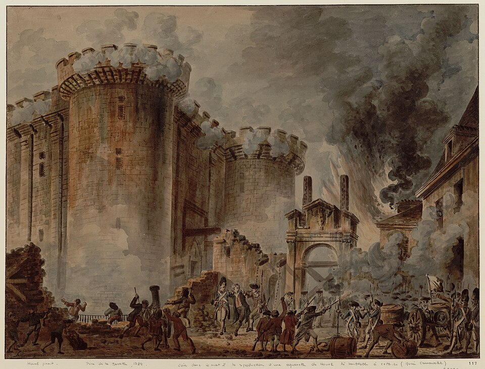

Tema 1 · 1700 — 1848De serfsa ciutadans
Crisi i revolució: de l'Antic Règim a la Primavera dels Pobles
10 nivells90 preguntes
Minijocs
La presa de la Bastilla · Jean-Pierre Houël
Jocs d'estudi per preparar els exàmens: apunts, preguntes per nivells i minijocs.

Tema 1 · 1700 — 1848Crisi i revolució: de l'Antic Règim a la Primavera dels Pobles
10 nivells90 preguntes
La presa de la Bastilla · Jean-Pierre Houël